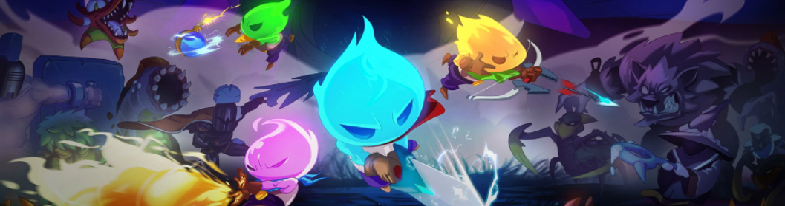
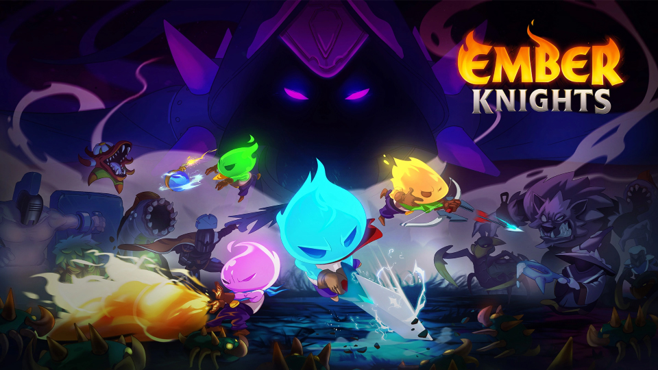
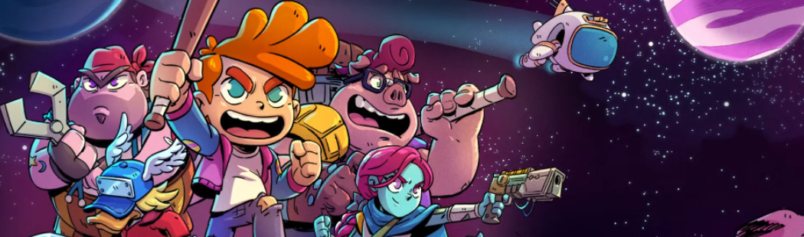
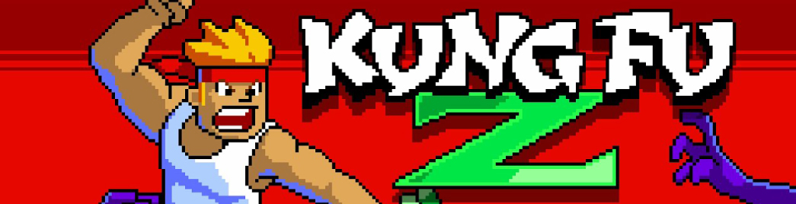
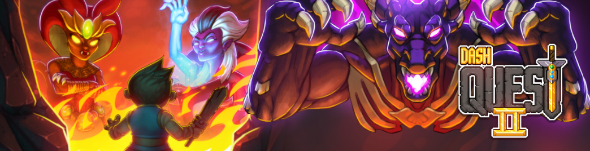
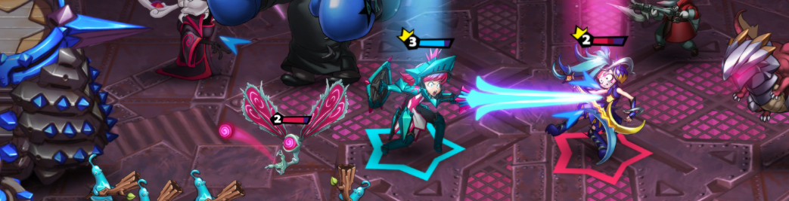
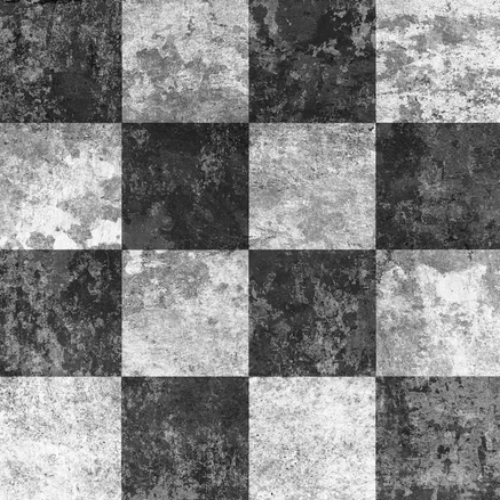

Oh hi, I'm Kyle
Description of me goes here. Words words words.
Professional Work

Ember Knights
Early Access April 2022, 1.0 Release July 2023
Released on Steam, Nintendo Switch, Xbox, Playstation
Lead Designer
System / Level / Enemy / Character Design
Gameplay Programmer
UI/UX Design
Core System Design
- Ember Tree permanent progression system and 15+ upgrades
- Weapon, Skill, and Relic unlock systems
- 'Trigger and Effect' Relic combo system and 37+ Relics
- Weapon Modification system to customize weapons, 45+ modifications, and the gameplay challenges to acquire their unlock currency
- 'Praxis' system where the main villain follows the player through their run, summons more challenges, verbally taunts them, and more
- Lead designer for 3 weapons, contributed to design of all 6
- 52 enemies with distinct behaviours and 14 intense Boss fight
- Room and enemy encounter design for all 6 areas of the game
- Designing, playtesting, and iterating all aspects gameplay and progression systems
- Additional programming for enemies, bosses, characters, weapons, relics, and more
- Lead the development team during the 1 year Early Access period
- Story progression, character and dialogue writing, and blocking out all the cutscenes
- Collaborated on the settings / themes for the 6 areas of the game
Action rogue-lites are one of my favourite game genres, so it was really exciting to be able to come up with our own ideas for intense gameplay, mechanics, and special moments for players to experience.
Ember Knights became the biggest project we made at the studio and the biggest project I had worked on at the time. My skillset was also broad enough that I ended up working on nearly every aspect of the game in some form.
Big Bosses
My favourite part of working on Ember Knights was designing the Boss encounters. They allowed for more engaging and elaborate encounters, to test the player on various mechanics they’d seen in the level preceding the boss, to hit them with something new, and to give each Boss their own personality and identity.
I wanted each boss fight to have a balance of actions that fit their theme, that tested the player’s skills, and had a level of spectacle to them. I was okay with an action that was relatively easy to dodge if it looked cool, the same as if it were an action that required the player to really pay attention to cues.
I also wanted to make sure that the difficulty didn’t come from simply throwing more ‘stuff’ at the player and overwhelming them. Positioning, spacial awareness, reflexes, timing, all of it was important. Once I got a boss design in a spot I was happy with I would playtest for balance: making sure there was appropriate anticipation on every attack, that the zones where players took damage were fair, that visual cues and audio gave players the required information. If I could beat a boss without getting hit once, I felt it was in a good spot.
Design Challenges
The project started out as an action RPG focused on story and with gameplay closer to Diablo. We determined the scope was too big and scaled it way back, taking the combat from our working prototype and starting to mold it into what eventually became Ember Knights
The most challenging time for Ember Knights was after we had launched our first public demo. Our initial ideas for level design, meta progression, and in-run progression weren’t received as well as we’d hoped and ultimately weren’t very engaging.
- Levels were randomly generated, consisting of rooms that were the same size but with different layouts. The game felt cramped, the actual navigation of a level felt slow and tedious, and the rewards for completing rooms weren’t satisfying
- Meta progression consisted of a large ‘unlock web’ -- like an actual spider web -- where the player would unlock everything in the game: more items for during the run, passive stat bonuses, new weapons, new skills, etc. This system was clunky to use, the passive stat bonuses didn’t have a meaningful impact on gameplay, and actually unlocking acutally impactful items like new weapons or skills was needlessly convoluted.
- The in-run progression consisted of collected Relics that mostly gave passive stat bonuses and limited noticeable effects.
To address the level design issue we scrapped the dungeon-crawler aspect and adopted a linear approach where the player completes a room, chooses 1 of 2 rewards for the next room, then moves forward. We made sure that every reward type was useful to the player, and always pitted similarly tiered rewards against each other. This new flow addressed the tedium or exploring and backtracking on a map, allowed us to design individual rooms of any size or layout, and kept the pacing of the gameplay high
To address meta progression issues we split the single ‘upgrade web’ into several new individual systems:
- To permanently increase their power players would collect and spend meta currency. The passive stat bonuses were all replaced with ‘choose 1 of 3’ upgrades with more impactful effects, like dealing more damage when below an HP threshold or rerolling random rewards
- To unlock new in-run Relics they would need to defeat cumulatively larger numbers of enemies and return to the staging area
- To unlock new Skills they would need to defeat a level’s Miniboss or Boss and return to the staging area
- To unlock new weapons they only needed to collect (but not spend) more meta currency
To address the in-run Relic issue I wanted to focus on noticeable effects and gameplay changes, a ‘trigger and effect’ system where when the player did ‘trigger X’, ‘effect Y’ would always happen. The system would also allow for the ‘effect’ to also act as a ‘trigger’, creating chain effects depending on the items the player had. This updated system would give the player immediate satisfaction for triggering an effect, it would allow them to customize their builds to make extended or ‘broken’ combos, and it added more replayability to try and find the most broken combos
Responsibilities and Creative Freedom
On Ember Knights I was given more responsibilities and also was allowed to stretch my creative muscles in various disciplines outside of design:
- During the Early Access period I managed the content to be developed, worked with a Producer to manage timelines and milestones, had final sign off on completed items, delegated junior designers, provided feedback and direction for artists, programmers, and audio designers
- Bosses in Ember Knights took a lot of art resources to bring to life, so it was very important that we got to test out mechanics and ideas before they got to an art pass. To help with this I made very basic animated 3D models and converted them into sprites that we could get in game and hooked up so we could playtest them as soon as possible
- Giving reference and feedback to the artists for level designs, character and enemy designs, animations, UI designs, icons, and more
- I worked directly with our external sound designers and composers
- I took over handling the main narrative, wrote all the dialogue for the game, storyboarded all the in-game cutscenes


Legends of Starkadia
Senior Designer
System / Level / Enemy / Character Design
Narrative Development
UI/UX Design
Game Design
- Turn-based combat system defining player-enemy action and turn orders, usable resources (HP, AP), special actions, and more
- Enemy 'weakness' system, more susceptible to certain damage types
- Quick time event input types for each character's attacks and abilities, bonuses for perfect timing
- Character attacks and abilities, damage types, and combos
- Item / Gear design (stats, gear types, combos, xp)
- Progression systems (equipment progression, xp levels)
- Boss and enemy designs for combat
- Level design, traversal mechanics, puzzles and interactions
- Enemy behaviours and patters outside of combat, player-chasing functionality
- UI/UX for all the various screens and menus
- Collaborated with a contract writer on the main story, character origins and personalities, dialogue, and more
- Quest lines for the main story, side quests for various worlds
My time on Starkadia was mostly spent exploring ideas for turn-based combat mechanics, ideas for what the ‘overworld’ experience would be, some initial progression mechanics, and narrative work regarding the plot, the characters, the various worlds, and other pieces of lore.
The initial pitch for the game was as a rogue-lite with RPG elements, that then transitioned to be more like a regular RPG (not a rogue-lite). My role was to flesh out the elements from the pitch for a more ‘full’ RPG experience.

Kung Fu Z
Released July 2018 on Android, iOS
Designer
System Design
Combat / Content Design
Monetization / Live Ops
UI Design
Core System Design
- Meta progression, infinite ‘prestige’ mastery system, 14+ upgrades
- XP and level system, 15+ new combo attacks to unlock
- Sidekick system and progression, and design for 6 sidekicks
- Randomly generated loot system with stats, bonus perks, and infinite upgrade scaling
- 20 different character abilities
- 11 temporary Powerups to unlock and activate
- 12 Sidekick abilities
- 23 Enemy and Boss designs
- FTUE / Tutorials
- Designing, playtesting, and iterating all aspects gameplay and progression systems
- UI layouts for the majority of the game
- Monetization & IAP - Revives, consumable items, seasonal bundles, costumes, sidekicks, and others
- Live Ops content which included leaderboards, temporary events, seasonal content
My role on KFZ was taking an early combat prototype and fleshing out the concept into a full mobile game experience. KFZ was later purchased by Trophy Games and renamed to Kung Fu Zombie.
Design and Development
Kung Fu Z was a new challenge for me because the prototype consisted mostly of a simple combat system and an art style, and I was given the task of fleshing out what the actual game would be for the first time.
From that base we would refine the combat more, I would come up with the flow of the game, new mechanics like abilities, gear generation, powerups, and sidekicks, the various progression systems, the monetization strategy, and nearly every other aspect of the game design.
I did a lot of research on other popular mobile games at the time for reference on how they were keeping players’ attention, what monetization strategies were the most successful, what level of direct interaction players were interested in, and how to apply all that information to the game.
KFZ’s development had a lot of fun moments where it was just myself and the sole programmer on the team riffing ideas and secrets and putting them into the game.

Dash Quest 2
Released October 2019 on Android, iOS
Designer
System / Level / Enemy / Character Design
Combat / Content Design
Gameplay Programmer
Monetization / Live Ops
UI Design
Core System Design
- Player Progression systems (upgrades, skills, gear, and more)
- Abilities, ability unlock system, and ability upgrade system
- Relic system, 50+ passive effects, daily mystery Relics
- XP and level system, Skill trees and 40+ passive skills to unlock
- Gear unlock system and permanent bonuses for unlock progress
- Wave-based spawning system for levels and raids
- 140+ equippable pieces of gear and bonus effects
- 12 unique boss encounters
- 120+ enemies
- 70+ Levels
- 18 abilities with 30+ unique upgrades and multiple synergies/combos
- Designing and adjusting player and enemy infinite scaling
- FTUE / Tutorials
- Designing, playtesting, and iterating all aspects gameplay and progression systems
- UI layouts for the majority of the game
- 5 Live Ops Raids, 2 seasonal Raids
- Live Ops and Monetization (daily activities and bonuses, IAP purchases, subscription system, seasonal content, weekend events)
Dash Quest 2 is a level based ‘runner’ RPG that was a re-imagining of Dash Quest Heroes to be more mobile friendly. After I made a simple prototype to show of some gameplay changes and creating a pitch doc, I was given the opportunity to run a small team and create this mobile game.
The timeline from pitch to full launch was around 4 months. We re-used a lot of visual and audio assets and some base code from Dash Quest Heroes to make the game.
Dash Quest 2 was later purchased by Trophy Games.
Design and Development
Dash Quest 2 was a lot of work, but also a lot of fun. This was the first time that I got to pitch an idea, have it be approved, and see it through from beginning to end.
For most of the production the team was: a producer, a programmer, and me. This project taught me a lot about time management, organization, and the value of having a pre-production phase. We had very little time to hit all of our milestones once we got running, so using that time efficiently was paramount to our success.

Arena Stars
Released January 2019 on Android, iOS and Steam
Designer
Character Design
Combat / Content Design
Gameplay Programmer
Game Design
- Review and rebalancing for existing heroes, minions, spells
- Designed 5 new heroes, 31 new minions, 11 new spells
- 'Hero Mission' system, 72 unique missions (8 per hero) and their rewards
- Developed concepts and themes for 3 new ‘hero regions’
- Additional programming for heroes, minions, and spells
- Additional UI screen layouts
Arena Stars was nearing launch when I joined the project. My roles were to fill out the roster of existing content, design new content and systems for post-launch, and playtesting/iterate/balancing the existing content.
Design and Development
Before starting on new content I reviewed the existing heroes, minions, and spells, to make sure that each of them served an identifiable mechanical purpose / had their own identity. In some instances we had units that were nearly identical, such as ranged units with simple (and similar) behaviour of moving to a position and shooting.
Major reworks were outside of scope, but relatively simple changes like having one unit throw a projectile that bounced to other nearby targets, changing another to have a slow moving projectile that damaged enemies on the way to its target, and another that had a shorter range but pushed enemies backwards, along with stat tweaks, gave the units more varied use cases in different decks

Dash Quest Heroes
Words
1v1 real-time arena battler
- List item
Personal Projects

Project Name
Description.